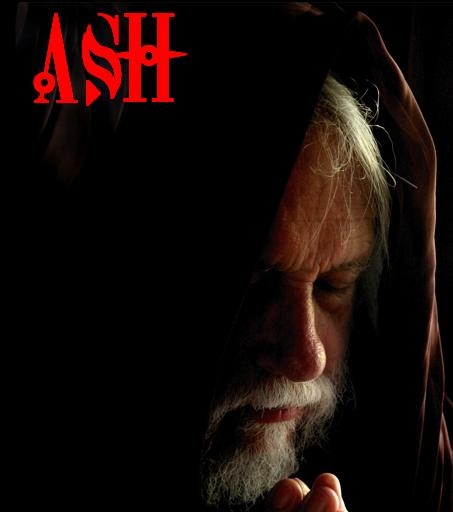

Forums galactiques > Assemblée Galactique : diplomatie officielle > Angely et le Gouvernement!
Pages : 1
| Ragnard Respect diplomatique : 1318 04/02 ETU 21:41 | Score : 16 Détails Ragnard arriva à l'Assemblée Galactique dans une fureur noire. Ses services de renseignements, après une enquête approfondie, avaient fait une découverte extrêmement étrange sur la coalition "Confédération d'Aura", le groupe de fous furieux dont le leader Angely avait lancé une campagne de massacres sur l'ensemble de la galaxie Esperance.
Il serrait, dans son poing crispé, le pad sur lequel ces renseignements étaient notés. Une explication s'imposait, de toute urgence, de la part de cette illuminée et de Detah. Entrant brusquement dans une salle de l'Assemblée Galactique, sans un regard pour les commandants à moitié endormis sur les bancs de l'hémicycle, il s'approcha du pupitre et prit la parole d'un ton ferme. Commandantes, commandants d'Esperance, Vous me voyez désolé de vous déranger dans votre....... apathie actuelle face aux évènements graves qui touchent notre galaxie, mais, levant le poing, il montra à tous les commandants présents le pad qu'il tenait. les services de renseignements des Loups Hurlants ont, récemment, fait une découverte touchant la coalition "Confédération d'Aura" dont le leader, Angely, a lancé un génocide massif en règle sur la totalité d'Esperance. Je présume que vos propres services de renseignements ne sont pas plus stupides que les miens, et que certains d'entre vous ont déjà fait, eux aussi, cette découverte extrêmement troublante. Cependant, comme aucun de ceux qui sont au courant de l'affaire ne semble disposé à porter cette abherration à l'attention de tous, je vais le faire sur l'heure. Je pose donc la question à Detah, en tant que détenteur actuel du système 0 et d'Ambassade et, par là même, des charges gouvernementales qui vont avec. Detah, quelle est la signification de l'affiliation du Gouvernement à la "Confédération d'Aura"? Ceci implique-t-il que ce gouvernement fantôche, dont vous êtes détenteur, s'associe aux troubles engendrés par la folie d'Angely? Est-ce un appui politique que vous compter lui apporter? Ou, pire, l'approbation, par ce gouvernement, des actes ignobles commis par cette folle furieuse? Personnellement, je tendrai à dire OUI à toutes ces questions, puisque deux des membres des CW, Wantus et Gally, sont également membres de cette coalition! A quand votre propre adhésion à ce rassemblement d'assassins des peuples d'Esperance? Les discussions pour l'avenir d'Esperance étaient pourtant en bonne voie! Nombre de dirigeants étaient prêts à s'impliquer dans cette tâche nécessaire pour le bien de tous. Jusqu'à ce que ces malades du bouton rouge ne se lancent dans une folle chevauchée à travers tous les systèmes, massacrant des milliards d'innocents, soi-disant dans le but de réunifier la galaxie, de réveiller les dirigeants de ces peuples qu'ils anéantissent. Alors, Detah, est-ce là VOTRE solution à notre demande, légitime, d'un nouveau régime politique pour le bien de tous les peuples d'Esperance. Est-ce cela, VOTRE CW RÉPUBLIQUE D'ESPERANCE? Quand à vous, Angely, quel est, réellement, votre but ultime? Vous partager, avec vos amis de la "Confédération d'Aura", les restes d'Esperance? Votre soi-disante croisade pour la paix n'est-elle pas, plutot, la recherche d'une main-mise sur l'ensemble de la galaxie? Pour ma part, je dirais que ce n'est que l'action d'une démente assoiffée de sang et de massacres gratuits! SACHEZ POURTANT QUE LES PEUPLES LIBRES D'ESPERANCE NE SE RENDRONT PAS SOUS LES COUPS QUE VOUS LEUR ASSÉNEZ! NOUS NOUS BATTRONS JUSQU'A LA MORT S'IL LE FAUT! | ||
| Rendillion Respect diplomatique : 675  05/02 ETU 11:38 | Score : 5 Détails "Je trouve votre prise de parole très judicieuse Ragnard.
Pour ma part, j'attends avec beaucoup d'impatience la réaction de ce cher Dénior quand il apprendra que celui en qui il avait mis tant d'espoir n'est que le digne fils de son père. J'espère, et je me moque bien de ce qu'on me répondra, que ce cher Detah ne se révêlera pas aussi trompeur dans d'autres types d'affaires, plus personnelles. Sans quoi, je serais très peiné d'apprendre que d'autres en souffrent..." | ||
| Angely Respect diplomatique : 380  05/02 ETU 14:35 | Score : 2 Détails La peste est une maladie mortelle,
Elle se propage et tue des millions de gens, Il nous faut l'arrêter impérativement, La seule solution que nos chercheur ont trouvé est de faire utilisation massive du canon à ions. | ||
| Rendillion Respect diplomatique : 675 05/02 ETU 15:07 | Score : 3 Détails Puisque les canons à ions sont le seul rempart à l'expension de cette maladie,
vous comprendrez aisément pourquoi vous avez été jerclée de tous mes systèmes avec pertes et fracas... | ||
| Angely Respect diplomatique : 380 05/02 ETU 16:37 | Score : 3 Détails Trop tard...
J'ai été mordue... Ah... Fin triste qui m'attends... Je ne veux pas vous voir souffrir, Avant de mourrir, je vous sauverai, Mon dernier baiser arrivera, Attendez le, appréciez le. |
Pages : 1
Forums galactiques > Assemblée Galactique : diplomatie officielle > Angely et le Gouvernement!